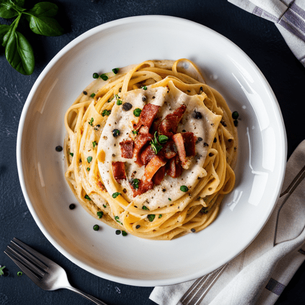

Spaghetti with Carbonara Sauce

Description:
A foolproof way to make a silky, guanciale and cheese-sauced spaghetti carbonara. A unique twist on the classic.
Ingredients:
- Kosher salt
- 1 pound (450 g) dried spaghetti
- 1/2 cup diced guanciale, pancetta, or bacon (about 3 ounces, 85 g)
- 3 tablespoons (45 ml) extra-virign olive oil, divided
- 2 whole large eggs plus 6 yolks
- 1/4 cup grated Pecorino Romano (about 1 ounce; 25 g), plus more for serving
- 1/4 cup grated Parmigiano-Reggiano (about 1 ounce; 25 g), plus more for serving
- 1 reaspoon freshly ground black pepper (ground medium-coarse), plus more for serving
Steps:
- Bring a pot of salted water to a boil. Add pasta and cook, stirring occasionally, until al dente.
- While the pasta is cooking, combine protein with 2 tablespoons (30 ml) olive oil in a large skillet and cook, stirring frequently, over medium heat, until the fat has rendered and protein is crisp, about 7 minutes.
- In a large, heatproof mixing bowl, whisk together whole eggs and yolks, Pecorino Romano, Parmigiano-Reggiano, and black pepper
- Using tongs, transfer pasta to skillet with crisped protein and its fat; do not drain boiling pasta water. Add remaining 1 tablespoon (15 ml) olive oil to pasta and stir to combine; let cool slightly. Scrape pasta, protein, and all the fat into the egg mixture. Measure 1/2 cup (120 ml) pasta-cookiing water and add to pasta and egg mixture. Stir well to combine.
- Set mixing bowl over pot of boiling water to make a double boiler (make sure the bottom of the bowl does not touch the water) and cook, stirring quickly with tongs, until sauce thickens to a creamy, silky consistency and leaves a trail as you stir. Remove from heat, season with salt (if needed), and divide into bowls. Serve immediately, topping with more grated cheese and freshly ground pepper, as desired.
Home